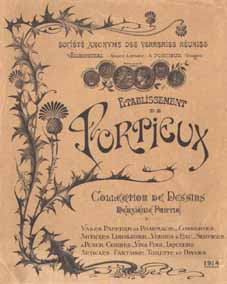
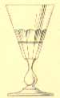
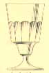
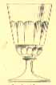
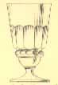
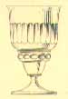
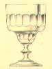
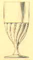
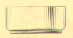

 |
Designation : named as absinthe glass. Dénomination donnée : nommé comme verre à absinthe. Taille :est proposé de la taille extra jusqu'à 3 (les tailles vont de 1 à 7 dans un ordre décroissant). Déscription donnée : jambe balustre, 1/2 côtes plates et filets gravés. Autre : modéle assez rare et trés esthétique que l'on rencontre surtout dans l'est de la France. |
 |
Designation : named as absinthe glass. Dénomination donnée : nommé comme verre à absinthe. Taille :est proposé uniquement dans la taille 2 (les tailles vont de 1 à 7 dans un ordre décroissant). Déscription donnée : culot ordinaire et 1/2 côtes plates. Autre : modéle assez rare. |
 |
Designation : named as absinthe glass. Dénomination donnée : nommé comme verre à absinthe. Taille :est proposé de la taille extra jusqu'à 3 (les tailles vont de 1 à 7 dans un ordre décroissant). Déscription donnée : culot, jambes hautes et 1/2 côtes plates. Autre : modéle assez rare. |
 |
Designation : named as absinthe glass. Dénomination donnée : nommé comme verre à absinthe. Taille :est proposé uniquement dans la taille 2 (les tailles vont de 1 à 7 dans un ordre décroissant). Déscription donnée : culot tranché et 1/2 côtes plates. Autre : modéle trés rare. la dose d'Absinthe est bien marquée par le culot tranché. |
 |
Designation : named as Italian absinthe glass. Dénomination donnée : verre à absinthe italien. Taille :est proposé uniquement dans la taille 2 (les tailles vont de 1 à 7 dans un ordre décroissant). Déscription donnée :taille anglaise. Autre : modéle trés rare. la dose d'Absinthe est bien marquée par le culot tranché. |
 |
Designation : named as absinthe glass pattern cup. Dénomination donnée : verre à absinthe forme coupe. Taille :est proposé uniquement dans la taille 2 (les tailles vont de 1 à 7 dans un ordre décroissant). Déscription donnée :forme coupe et 1/2 côtes plates. Autre : modéle rare. la dose d'Absinthe est bien marquée par le culot . |
 |
Designation : named as absinthe glass "Nicolas". Dénomination donnée : verre à absinthe Nicolas. Déscription donnée :moulé côtes torses. Autre : le classique du classique produit par toutes les verreries Francaises jusqu'en 1940. c'est le seul modèle courant du catalogue déstiné à l'Absinthe. Ce dernier possède aussi des verres formes oeuf et Yvonne qu'il ne déstine pas à l'Absinthe. |
 | Dénomination donnée :verse eau uni. |